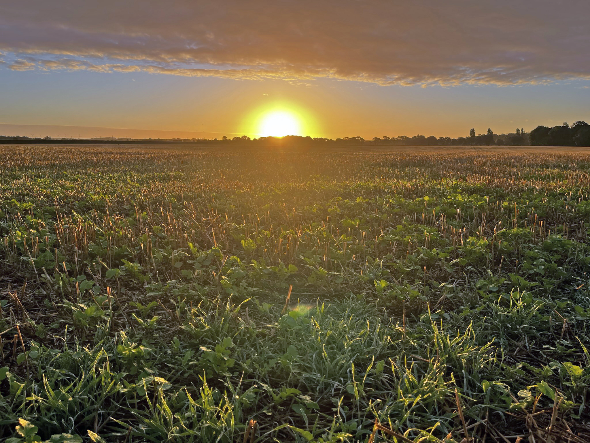
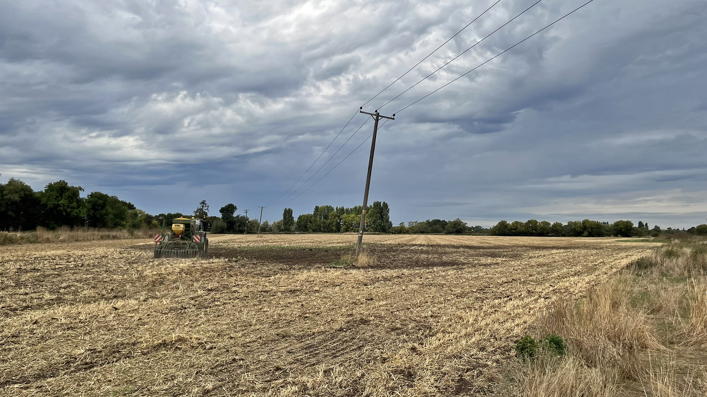
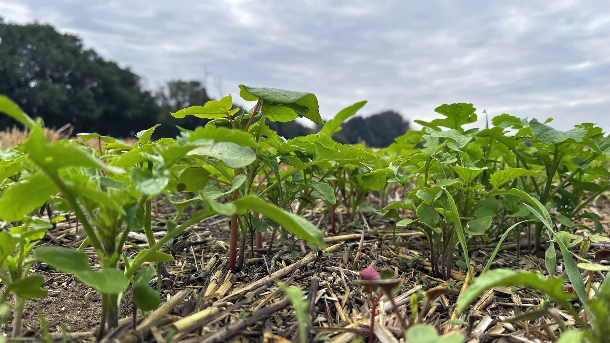
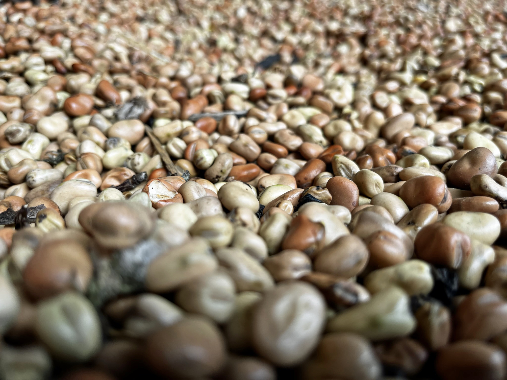
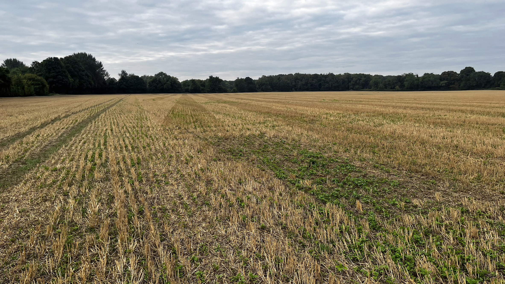
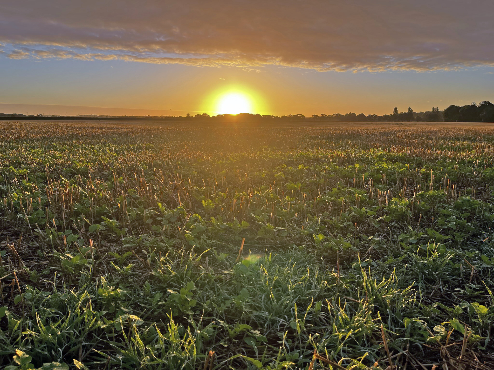
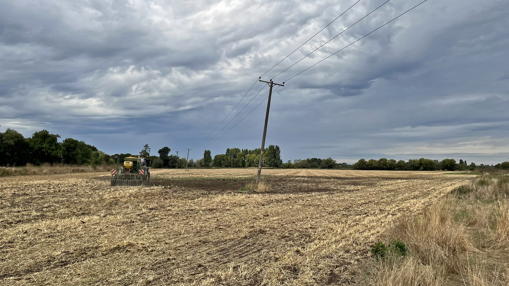
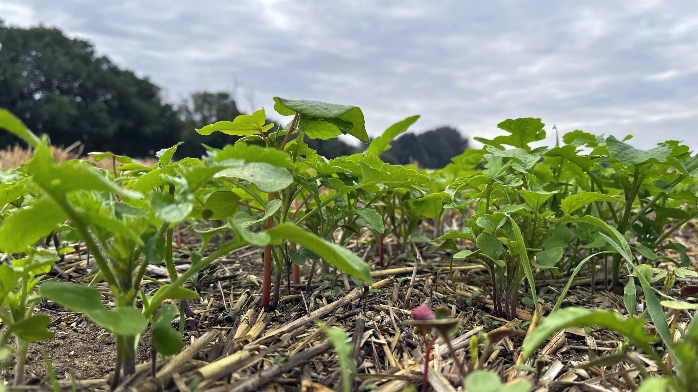
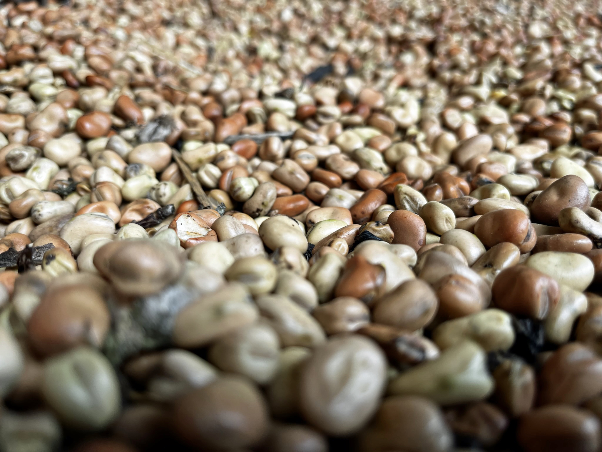
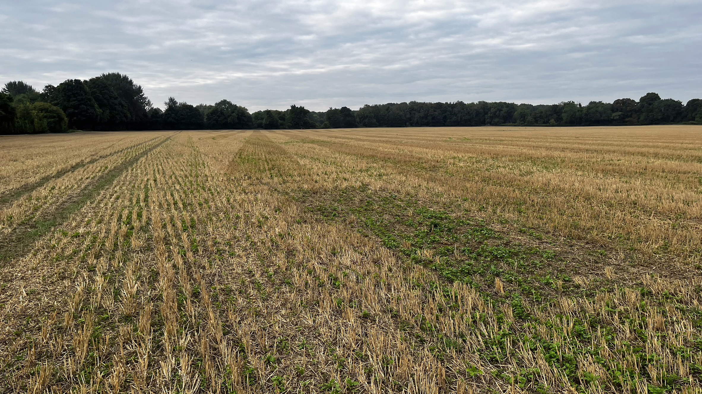

our enterprises
About Drivers Farms
In the heart of Sawston, the Molton family have been farming at Drivers Farms since 1961, for almost three generations. Originally farmed by Harold 'John' Molton with a milking herd, the farm decided to change tac and began rearing a herd of Limousin beef cattle which has been a mainstay at the farm. Alongside the cattle, we introduced a flock of sheep to the farm in 2008 which graze on permanent meadowland all year, ensuring that our lamb is 100% pasture reared. Additionally, Drivers Farms has an arable enterprise, extending over 258 hectares of the South Cambridgeshire countryside. This enterprise produces a variety of crops, utilising cutting edge agricultural practices, such as regenerative agriculture, to ensure the sustainability of our farm in the future.
Gallery
 








